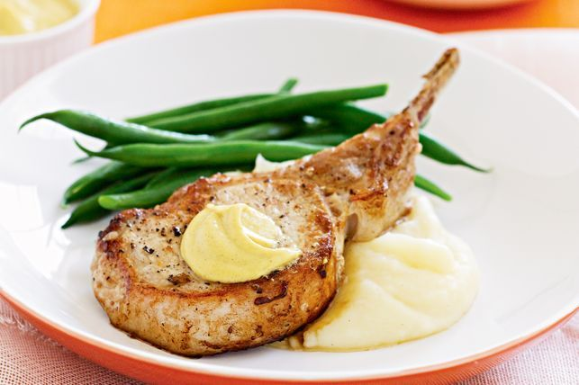

Dijon pork with creamy mash

description:
Rediscover the perfect match of creamy Dijon mustard and tender pan-fried pork.
Ingredients:
- 4 pork cutlets
- 2 tsp olive oil
- 300g green round beans, trimmed
- 1 x 475g ctn Mashed Potatoes
- Dijon mustard, to serve
Instructions:
- Preheat a large non-stick frying pan over medium heat. Brush the pork with the oil and season with salt and pepper. Cook the pork for 3-4 minutes each side for medium or until cooked to your liking. Transfer to a plate and cover loosely with foil. Set aside for 5 minutes to rest.
- Meanwhile, cook the beans in a steamer over a saucepan of simmering water for 4 minutes or until bright green and tender crisp.
- Heat the mashed potato following packet directions.
- Divide the mash, pork and beans among serving plates. Top the pork with a dollop of mustard to serve.
Return To Home